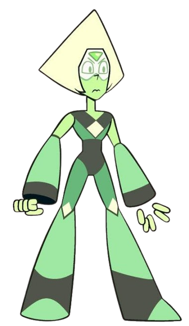
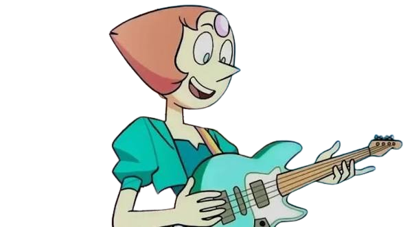
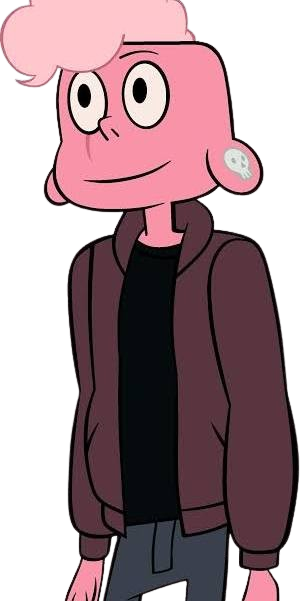

Peridot
Peridot starts off as a cold, arrogant Homeworld gem who believes in following orders and sees Earth as worthless. However, after becoming stranded on Earth, she slowly learns to appreciate its life and individuality, eventually questioning Homeworld’s beliefs and choosing to help the Crystal Gems. Through her friendship with Steven and Lapis, Peridot becomes more empathetic, independent, and open minded. Her journey shows how she grows from someone who blindly follows authority into someone who thinks for herself and finds a place where she belongs.

Pearl
Pearl starts off as a strict, protective, and sometimes overbearing Crystal Gem who struggles with insecurity and her past relationship with Rose Quartz. Throughout the show, she learns to let go of her grief, accept Rose’s flaws, and stop defining herself through someone else. Her relationship with Steven helps her become more independent and emotionally honest. By the end, Pearl grows into a confident individual who understands that her life and identity are her own, not just tied to Rose.

Lars
Lars starts off as an insecure, sarcastic teenager who tries to act cool and often pushes others away because he fears being judged. Throughout the show, he slowly becomes more caring and brave, especially through his experiences in space with the Off Colors. After sacrificing himself to save others and being brought back to life, Lars becomes a confident leader who learns to accept himself and protect the people he cares about. His journey shows how he grows from someone who hides his insecurities into someone who embraces who he is.